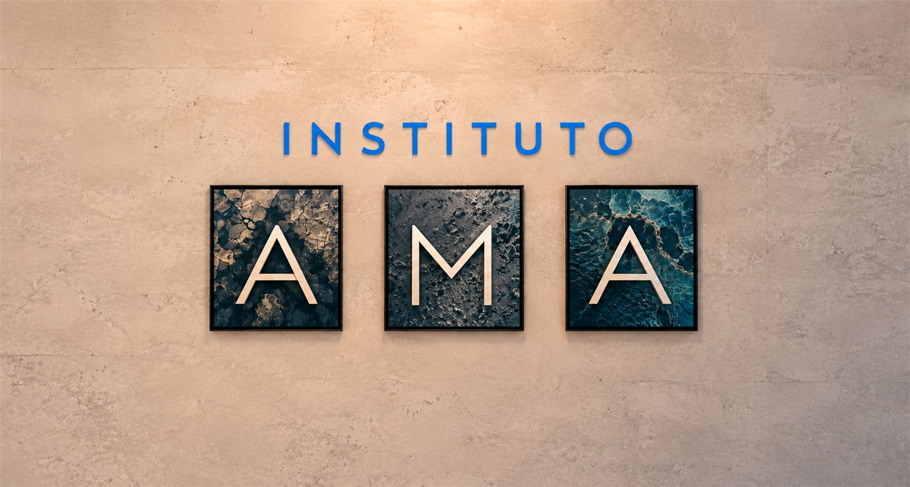
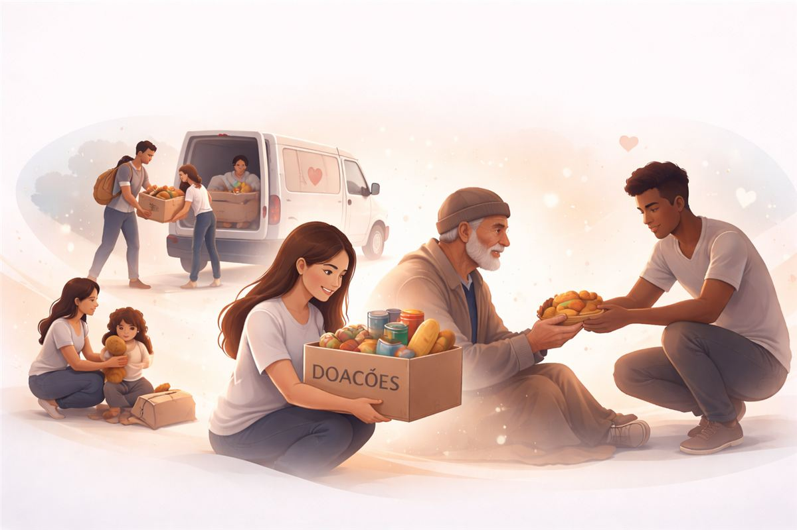

Amor, Misericórdia e Ação
Vamos apoiar e fortalecer os programas existentes de entidades já conhecidas e parceiras e criar novos, com foco em educação e apoio ao próximo.

O que fazemos
Unimos educação, autoconhecimento e solidariedade para transformar vidas — de quem recebe e de quem ajuda.

Sobre nós
Vamos apoiar e fortalecer os programas existentes de entidades já conhecidas e parceiras e criar novos com foco em educação e apoio ao próximo.
Veja maisTrabalhos
Destacar os principais trabalhos realizados e dicas de como você pode colaborar também.
Veja mais
Blog
Matérias sobre evolução e autoconhecimento, com referências e sugestões de material e apoio complementar.
Veja maisMatérias do blog

O que é terapia e para que serve?
Terapia individual e em grupo: como funcionam e por que cuidar da saúde mental.
Ler matéria
Como as pessoas te enxergam: hábitos que constroem ou prejudicam sua imagem
Pequenos comportamentos do dia a dia dizem mais sobre nós do que grandes discursos.
Ler matéria
5 estratégias eficazes de gerenciamento da ansiedade
Ansiedade não é fraqueza: pequenas escolhas diárias constroem mais equilíbrio.
Ler matériaQuer caminhar com a gente?
Seja voluntário, parceiro ou apoiador — toda ajuda faz diferença.